Nội dung
Đặng Khải Ninh
Cách mạng tháng Tám · 1945
Chủ đề 3 · Bài 6
Bước ngoặt khai sinh nước Việt Nam Dân chủ Cộng hòa
→ Space · click
Nội dung
Đặng Khải Ninh
Nội dung
Nguyễn Lê Tuấn Việt
Nội dung
Nguyễn Hoà Bình
Nội dung
Nguyễn Đông Thành
Bài thuyết trình
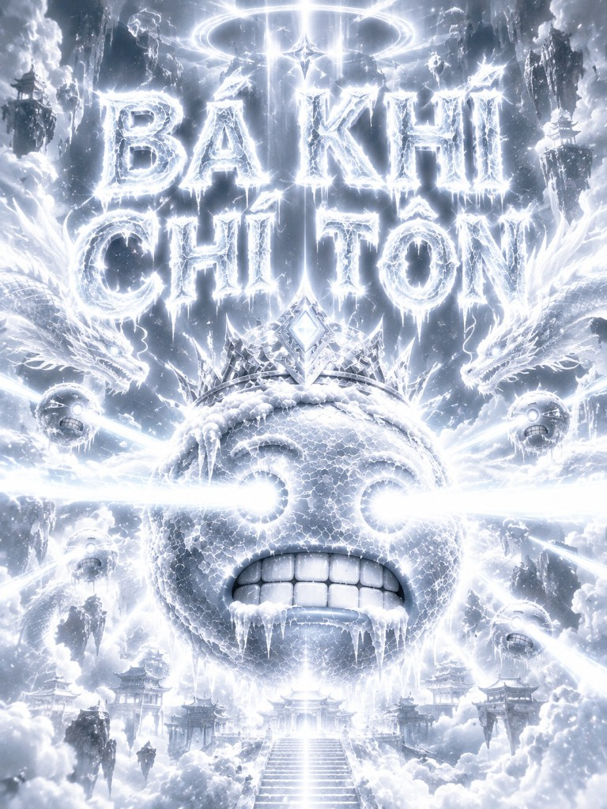
Hoàng Lâm Tài
Thuyết trình
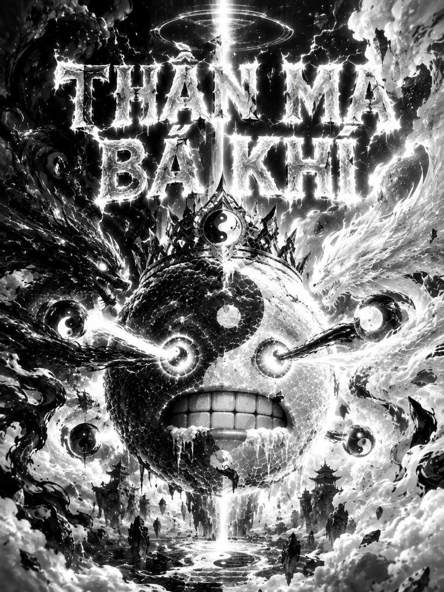
Lưu Trần Gia Huy
01
Phần 1
Thế giới đổi chiều — thời cơ ngàn năm có một đã đến
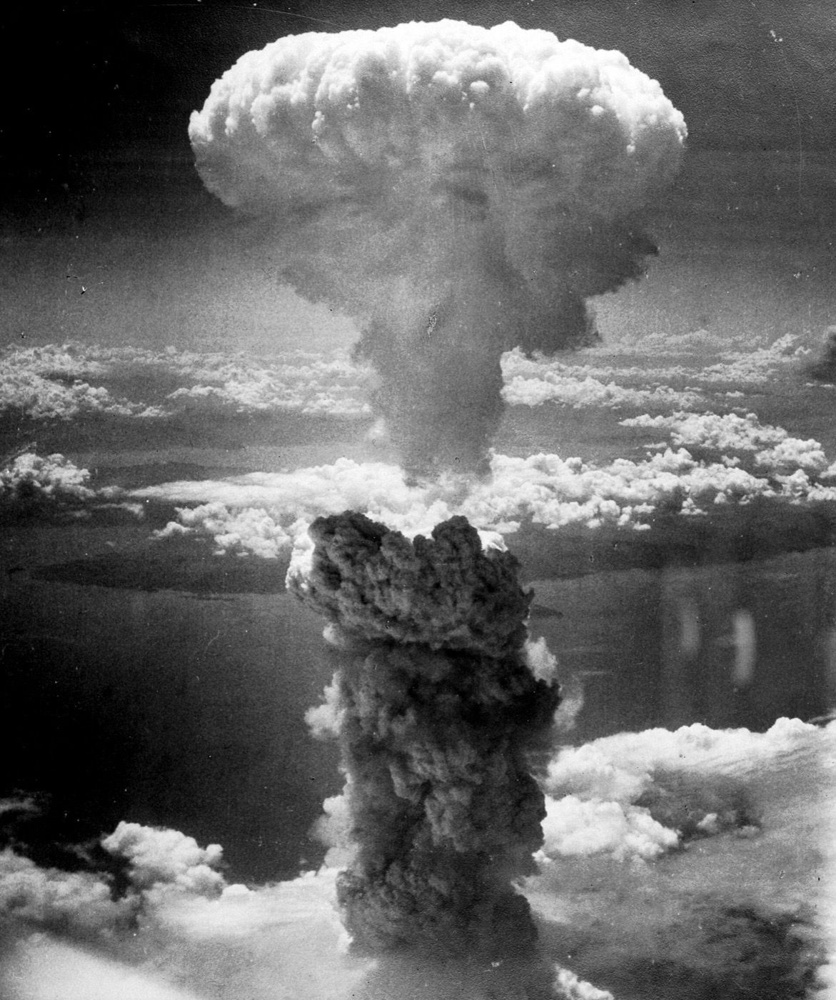
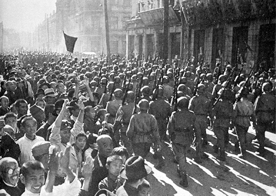
Ảnh Cáp Nhĩ Tân: Bộ Quốc phòng Nga · CC BY 4.0 · Wikimedia Commons
1. Bối cảnh · Thế giới
Mỹ ném bom nguyên tử xuống Hiroshima
Hồng quân Liên Xô tấn công, tiêu diệt đạo quân Quan Đông của Nhật ở Đông Bắc Trung Quốc
Quả bom nguyên tử thứ hai rơi xuống Nagasaki
Nhật đầu hàng không điều kiện → Chiến tranh thế giới thứ hai kết thúc
1. Bối cảnh · Trong nước
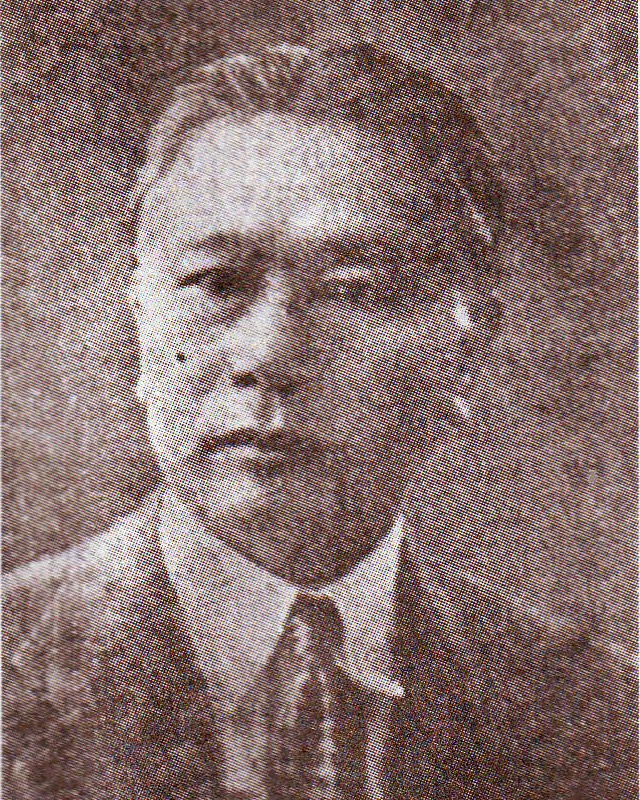
Trần Trọng Kim, Thủ tướng chính phủ thân Nhật
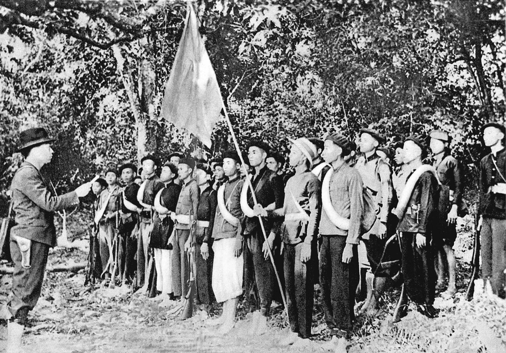
Đội Việt Nam Tuyên truyền Giải phóng quân, 22/12/1944
Điều kiện khởi nghĩa đã chín muồi — chỉ còn chờ thời cơ.
1. Bối cảnh · Thời cơ
Từ khi Nhật đầu hàng đến trước khi quân Đồng minh vào Đông Dương
Kẻ thù cũ đã gục ngã, kẻ thù mới chưa kịp đến
Lúc này thời cơ thuận lợi đã tới, dù hy sinh tới đâu, dù phải đốt cháy cả dãy Trường Sơn cũng phải kiên quyết giành cho được độc lập.
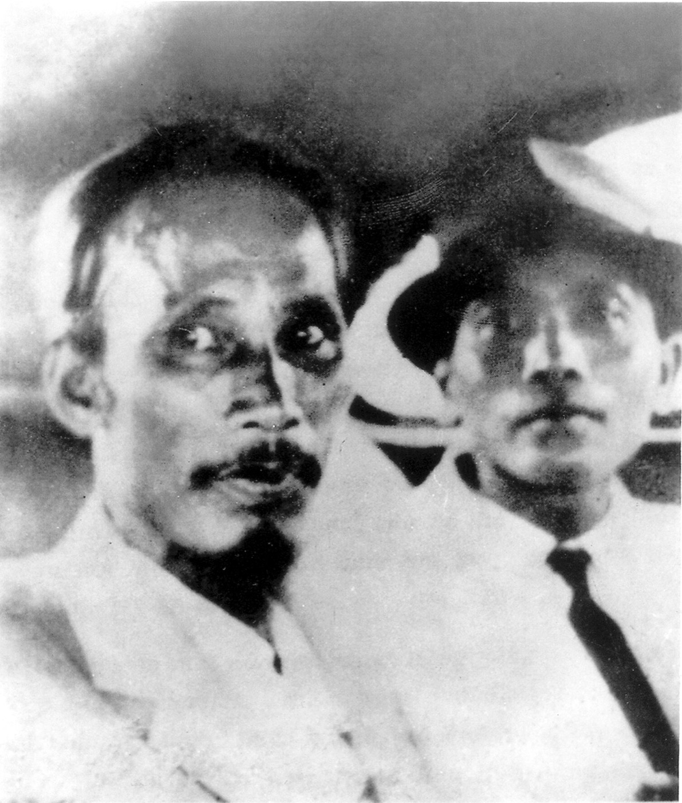
02
Phần 2
Giữa tháng 8-1945, khí thế cách mạng sục sôi khắp cả nước
2. Diễn biến · Mồi lửa
Nhật đầu hàng, quân Nhật rệu rã. Khí thế cách mạng sục sôi khắp nơi, chỉ chờ mồi lửa.
Quần chúng ở đồng bằng sông Hồng, Thanh Hóa, Nghệ An nổi dậy giành chính quyền.
Đội Giải phóng quân do Võ Nguyên Giáp chỉ huy tiến từ Tân Trào về Thái Nguyên.
2. Diễn biến · Cả nước
Từ những đốm lửa 14–16/8, cao trào khởi nghĩa lan ra khắp ba miền.
Bắc Giang, Hải Dương, Hà Tĩnh, Quảng Nam giành chính quyền ở tỉnh lỵ sớm nhất cả nước.
Khởi nghĩa giành chính quyền thắng lợi ở Hà Nội.
Khởi nghĩa thắng lợi ở Huế, kinh đô của triều Nguyễn.
Khởi nghĩa thắng lợi ở Sài Gòn.
Thắng lợi ở Hà Nội, Huế, Sài Gòn tác động mạnh đến các địa phương khác.
Đồng Nai Thượng, Hà Tiên giành chính quyền muộn nhất. Tổng khởi nghĩa thắng lợi trong cả nước (trừ một số thị xã do quân Trung Hoa Dân quốc chiếm đóng).
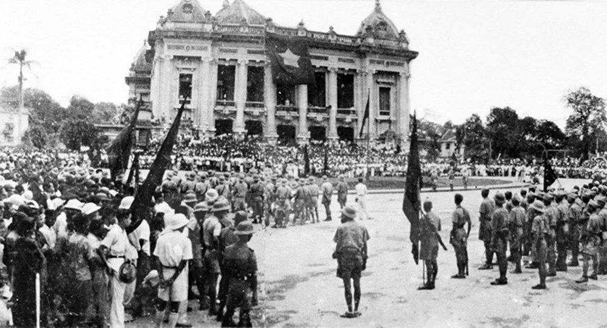
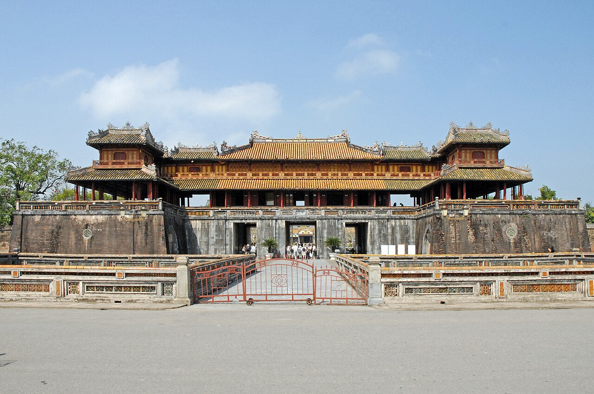
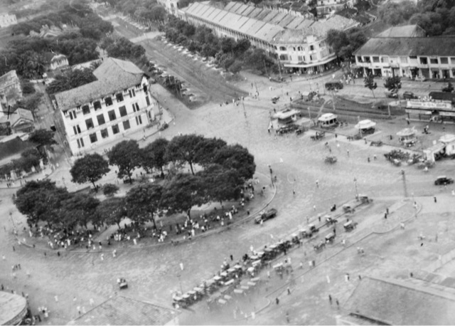
Thị xã do quân Trung Hoa Dân quốc chiếm đóng (minh họa)
Ảnh Ngọ Môn: Jean-Pierre Dalbéra · CC BY 2.0 · Bản đồ: Natural Earth
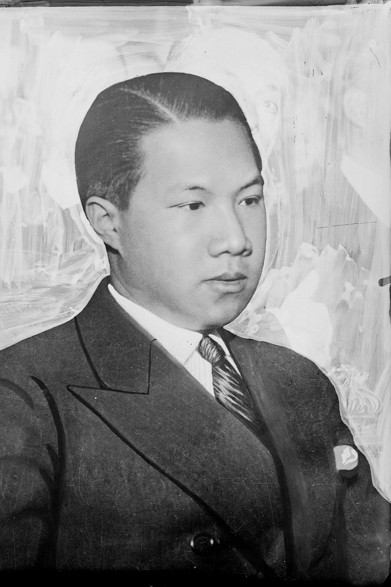
2. Diễn biến · 30/8/1945
Tại Ngọ Môn (Huế), vua Bảo Đại tuyên bố thoái vị, trao ấn, kiếm cho đại diện Chính phủ lâm thời.
Trẫm muốn được làm dân một nước tự do hơn làm vua một nước bị trị.
Chế độ phong kiến Việt Nam hoàn toàn sụp đổ.
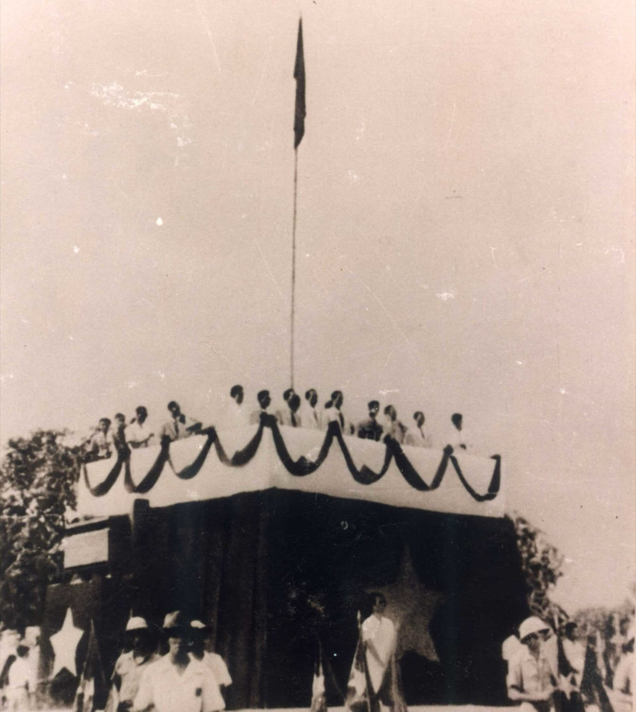
2. Diễn biến · 2/9/1945
Chủ tịch Hồ Chí Minh đọc Tuyên ngôn Độc lập
Tất cả mọi người đều sinh ra có quyền bình đẳng. Tạo hóa cho họ những quyền không ai có thể xâm phạm được; trong những quyền ấy, có quyền được sống, quyền tự do và quyền mưu cầu hạnh phúc.
Khai sinh nước Việt Nam Dân chủ Cộng hòa
03
Phần 3
Vì sao thắng lợi, và thắng lợi ấy có ý nghĩa gì?
3. Nguyên nhân thắng lợi
Chủ quan quyết định
đúng đắn, sáng tạo
Đảng Cộng sản Đông Dương có đường lối lãnh đạo đúng đắn, sáng tạo.
chu đáo, lâu dài
Quá trình chuẩn bị chu đáo, lâu dài suốt 15 năm, qua ba cuộc tập dượt 1930–1931, 1936–1939, 1939–1945.
yêu nước, đoàn kết
Nhân dân ta có truyền thống yêu nước, đoàn kết, cả dân tộc đồng lòng đứng lên khi thời cơ đến.
Khách quan thời cơ
& Hồng quân Liên Xô
Thắng lợi của Đồng minh và Hồng quân Liên Xô trong chiến tranh chống phát xít tạo thời cơ cho nhân dân ta vùng lên.
3. Ý nghĩa · Dân tộc
hơn80nămLật đổ
ách cai trị của thực dân Pháp
gần5nămLật đổ
ách thống trị của phát xít Nhật
Mở ra kỷ nguyên độc lập, tự do: giải phóng dân tộc gắn với giải phóng xã hội.
Từ thân phận nô lệ trở thành người làm chủ đất nước.
Đảng Cộng sản Đông Dương trở thành đảng cầm quyền.
Năng lực lãnh đạo của Đảng, tinh thần yêu nước và sáng tạo của nhân dân, chuẩn bị điều kiện cho những thắng lợi tiếp theo.
3. Ý nghĩa · Thế giới
trong Chiến tranh thế giới thứ hai.
Cổ vũ mạnh mẽ cuộc đấu tranh giải phóng của các dân tộc thuộc địa và phụ thuộc.
…lần này là lần đầu tiên trong lịch sử cách mạng của các dân tộc thuộc địa và nửa thuộc địa, một Đảng mới 15 tuổi đã lãnh đạo cách mạng thành công, đã nắm chính quyền toàn quốc.
Các điểm sáng mang tính minh họa
3. Bài học kinh nghiệm
Đảng là nhân tố quyết định thắng lợi, với đường lối đúng đắn, sáng tạo.
Xây dựng và phát huy sức mạnh khối đại đoàn kết toàn dân tộc.
Xác định đúng thời cơ; chủ động, mau lẹ chớp thời cơ để giành thắng lợi.
Nhớ lại: thời cơ “ngàn năm có một” · 8/1945
04
Phần 4
Những con số biết nói, và những vị khách lạ ở Tân Trào
4. Mở rộng · Con số
Thắng lợi thần tốc
15ngày
Tổng khởi nghĩa giành chính quyền trong cả nước.
khoảng5.000đảng viên
1 chấm sáng / 4.000
lãnh đạo hơn 20 triệu đồng bào.
Thử thách ngày đầu độc lập
95%mù chữ
Cứ 100 người thì 95 người không biết chữ.
1.230.720đồng · cả ngân khố
Gần một nửa ngân khố là tiền rách, chờ tiêu hủy.
Mù chữ: Tạp chí Lịch sử Đảng (SGK ghi “hơn 90%”) · Ngân khố: báo Tuổi Trẻ
4. Mở rộng · 2/9/1945
Ba Đình · 2/9/1945 · theo nhiều tài liệu
500.000
Đêm diễn đông nhất của Michael Jackson · Praha, 1996
125.000
Cả 7 đêm của Michael Jackson ở Wembley · 1988
504.000
Tôi nói đồng bào nghe rõ không?
Không màn hình lớn, không dàn âm thanh hiện đại.
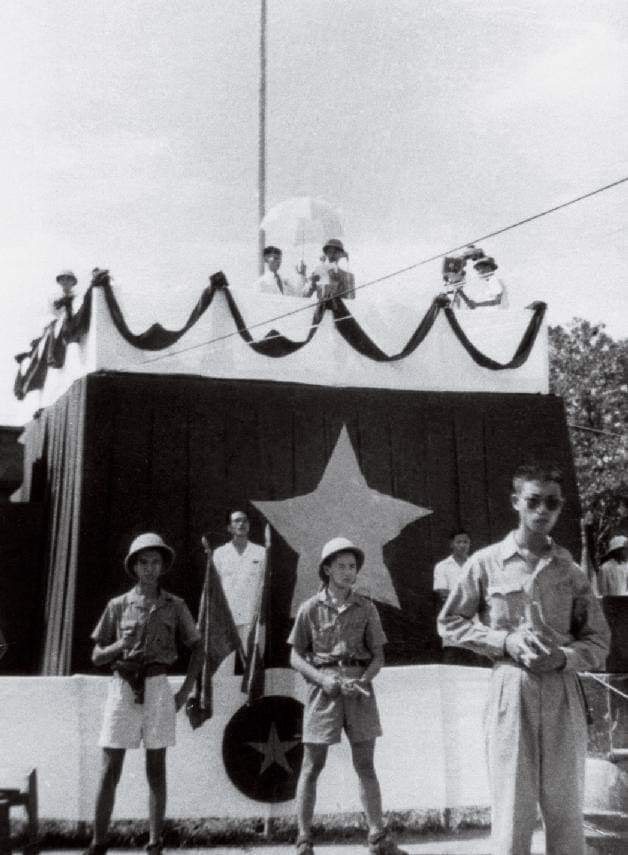
Số liệu concert: Guinness World Records · Wikipedia
4. Mở rộng · 22/12/1944
Đội Việt Nam Tuyên truyền Giải phóng quân, thành lập ở rừng Trần Hưng Đạo (Cao Bằng), tiền thân của Quân đội nhân dân Việt Nam.
Tày 19Nùng 8Mông 1Dao 1Kinh 5
là người dân tộc thiểu số: khối đại đoàn kết ngay từ những người lính đầu tiên.
Danh sách: Viện Lịch sử Quân sự Việt Nam (bia rừng Trần Hưng Đạo, Cao Bằng)
4. Mở rộng · Chuyện ít người biết
Việt Minh cứu một phi công Mỹ bị bắn rơi, mở đường liên lạc với Đồng minh.
Toán “Con Nai” (Deer Team) của OSS (tiền thân CIA) nhảy dù xuống Tân Trào, huấn luyện Việt Minh đánh Nhật.
Họ gọi Bác là “Mr. Hoo”, Võ Nguyên Giáp là “Mr. Van”. Bác ốm nặng, y tá của toán giúp chữa trị.
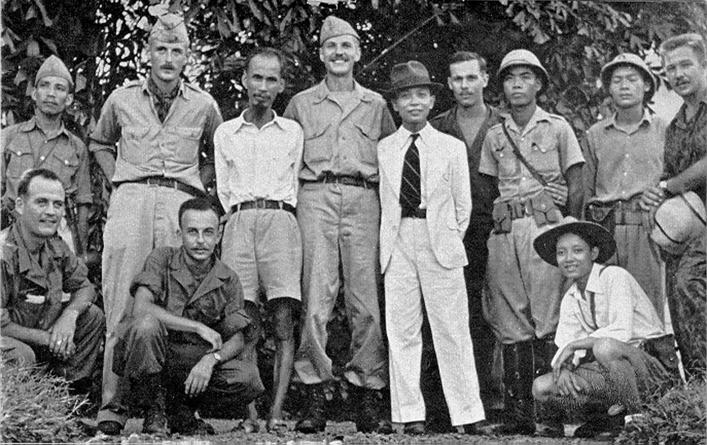
Mr. Hoo Mr. VanBiết tranh thủ Đồng minh chống phát xít, nhưng lực lượng quyết định vẫn là nhân dân ta.
Ảnh: Lục quân Hoa Kỳ, 1945 · phạm vi công cộng · Chi tiết theo hồi ký các thành viên toán Deer Team
05
Phần 5
5. Củng cố · Câu 1/9
Thời cơ “ngàn năm có một”: từ khi Nhật đầu hàng (15/8) đến trước khi quân Đồng minh vào Đông Dương.
5. Củng cố · Câu 2/9
Chiều 16/8, Giải phóng quân do Võ Nguyên Giáp chỉ huy tiến từ Tân Trào về Thái Nguyên, mở đầu Tổng khởi nghĩa.
5. Củng cố · Câu 3/9
Ngày 18/8, bốn tỉnh này giành chính quyền ở tỉnh lỵ sớm nhất cả nước.
5. Củng cố · Câu 4/9
19/8 Hà Nội, rồi 23/8 Huế, 25/8 Sài Gòn: ba trung tâm lớn lần lượt giành chính quyền.
5. Củng cố · Câu 5/9
Ngày 30/8 tại Ngọ Môn (Huế), Bảo Đại thoái vị, trao ấn, kiếm cho Chính phủ lâm thời.
5. Củng cố · Câu 6/9
Khoảng 50 vạn người dự lễ ở Ba Đình, khai sinh nước Việt Nam Dân chủ Cộng hòa.
5. Củng cố · Câu 7/9
B và C là nguyên nhân chủ quan; khách quan là thắng lợi của Đồng minh và Hồng quân Liên Xô.
5. Củng cố · Câu 8/9
Mở ra kỷ nguyên độc lập, tự do: giải phóng dân tộc gắn với giải phóng xã hội.
5. Củng cố · Câu 9/9
Xác định đúng thời cơ; chủ động, mau lẹ chớp thời cơ để giành thắng lợi.
Nhóm 8 · Bài 6
đã lắng nghe bài thuyết trình của nhóm!
“…sự thật đã thành một nước tự do, độc lập.” Tuyên ngôn Độc lập · 2/9/1945